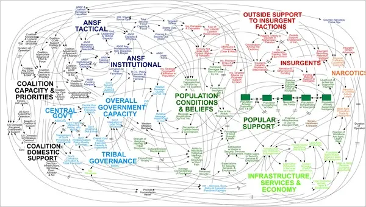
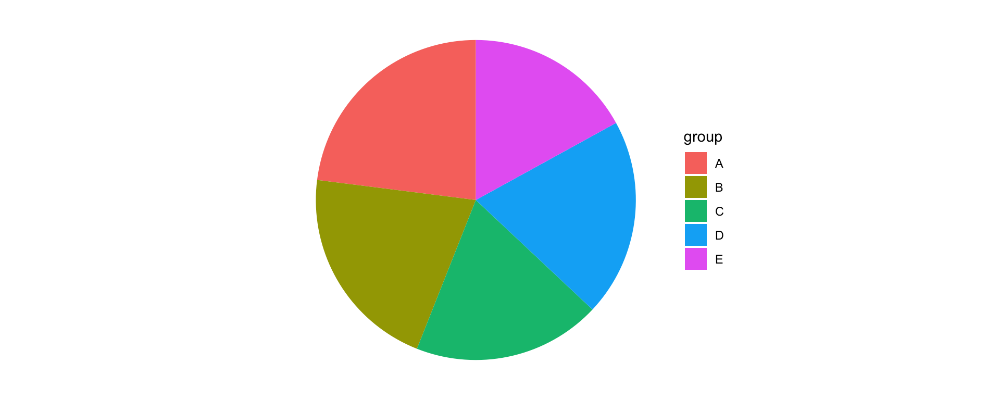
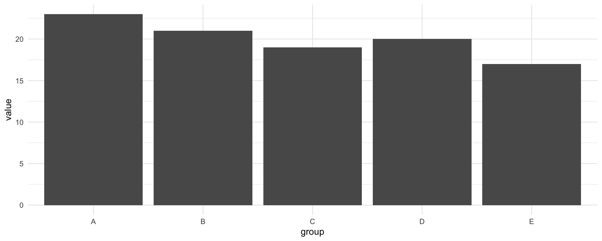
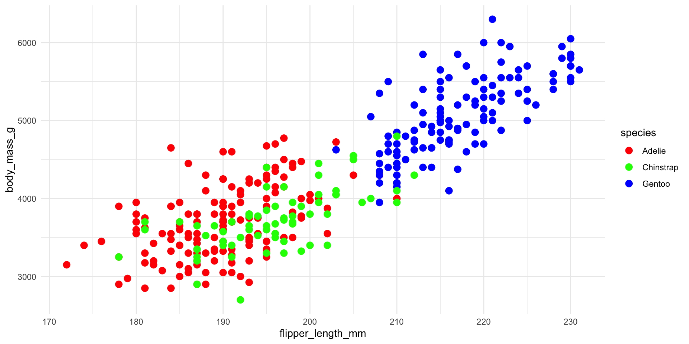

ggplot2By the end of this lecture you will be able to:
ggplot2ggplot2 is part of the tidyverse. We’ll use the Palmer penguins data from week 4.
Instead of choosing “a scatter plot” or “a bar chart”, we describe a plot by its parts:
aes) — which variables control position, colour, size, …geom_*) — what is drawn: points, lines, bars, ……plus optional stats, scales, coordinates and facets.
Task
Set up a plot of flipper length (x) against body mass (y). What do you see?
Axes, but no data: we’ve said what to map, not how to draw it.
Task
Draw one point per penguin.
Layers are added with +.
+, not |>Task
What’s wrong with this code?
Error in `geom_point()`:
! `mapping` must be created by `aes()`.
✖ You've supplied a <ggplot2::ggplot> object.
ℹ Did you use `%>%` or `|>` instead of `+`?Pipe the data in with |>; join layers with +. ggplot2 is older than the pipe — mixing them up is the most common beginner error.
Task
Colour the points by species.
A third variable, mapped to colour. size, shape and alpha (transparency) work the same way.
Task
Give the plot a title, axis labels with units, and a cleaner look.
Task
Draw a separate panel for each island.
Faceting splits the data into subsets with shared axes — ideal for comparing groups side by side.
Task
Add a straight-line trend for each species on top of the points.
geom_smooth() applies a statistical transformation (here a linear fit) before drawing. alpha = 0.6 lets overlapping points show through.
| Question | Chart | Geometry |
|---|---|---|
| Compare a value across categories | Bar chart | geom_bar() / geom_col() |
| How is one variable distributed? | Histogram, boxplot, violin | geom_histogram(), geom_boxplot() |
| How are two variables related? | Scatter plot | geom_point() |
| How does something change over time? | Line chart | geom_line() |
geom_bar vs geom_colTask
Plot (a) the number of penguins of each species, and (b) the mean body mass of each species.
geom_bar() counts rows for you. geom_col() draws heights you have already computed.
Task
Compare the distribution of body mass across species.
The boxplot gives the median and quartiles; the violin shows the shape the boxplot hides (e.g. two peaks).
Task
Using gapminder, plot life expectancy over time for the UK, Japan and South Korea.
Lines join points in order, so trends and crossovers stand out — Japan overtakes the UK in the late 1960s, and South Korea almost catches up by 2007.
ggplot2 won’t stop youThe \(y\)-axis starts at 94,000,000 — a small change looks like an explosion.

Task
Rank the five groups from largest to smallest.


How accurately do people judge…
Put the comparison that matters most on the most accurate encoding. That’s why bar charts usually beat pie charts.
Task
Around 8% of men and 0.5% of women are colour blind, most often red–green. Make this plot readable for them.

Use a colourblind-safe palette (viridis, ColorBrewer) and a redundant encoding like shape, so the plot survives greyscale printing too.
alpha for overplottingggplot() + aes() + geom_*() + labs()geom_bar from geom_colWe didn’t cover in detail:
facet_grid() and extension packages (patchwork, ggforce, gganimate)Also useful for coursework: ggsave("plot.png", width = 6, height = 4) saves the last plot.